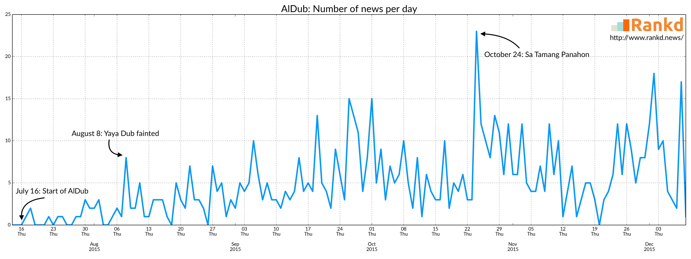
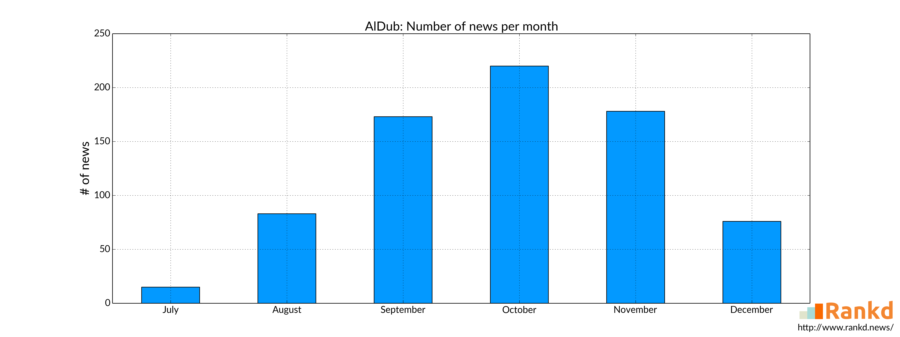
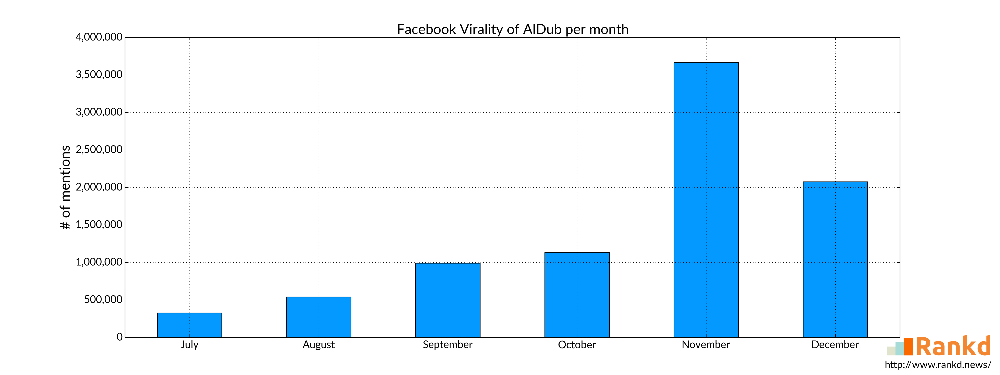
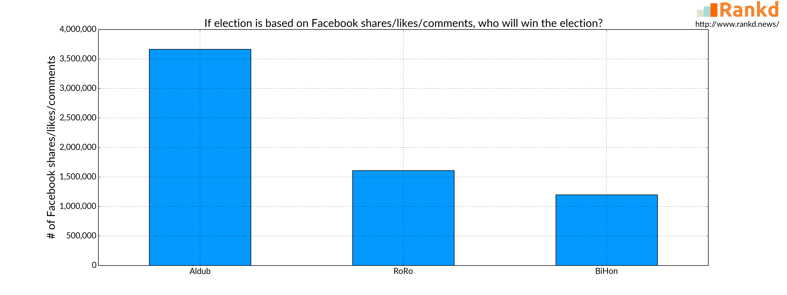

Analyzing the AlDub Fever
December 2015Actors and actresses have different stories to tell when you ask them how they started. There are some who got discovered by talent managers. There are some who won various contests. And for some, show business already runs in their blood even before they were born.
In our time today, there's a new way to get into show business. It is by going viral. The rise of the internet and social media here in the Philippines greatly contributes in this scenario. In fact, over 40% of Filipinos are active in social media. Thus, by posting something amazing, it is possible that it will be shared countless times by a lot of people and therefore becomes a viral hit.
An example of this is Maine Mendoza. She went viral by posting dubsmash videos that gathered 1 million views overnight. After a few weeks of going viral, she was casted as Yaya Dub in the noontime show Eat Bulaga! She was then paired to Alden Richards and they became known as "AlDub".
The start of AlDub
After Maine Mendoza and Alden Richards were paired in Eat Bulaga!, the amount of news about them increased rapidly.
The graph above shows how many news per day where AlDub was mentioned. As we can see, their first spike of news is when Maine Mendoza fainted on live television. After that, the number of news about them increased. And most of the time, there will be a spike in news during Saturdays when Eat Bulaga! airs a special story about them. The news where AlDub was mentioned peaked on October 24 when Eat Bulaga! held a concert called "Sa Tamang Panahon". They also reached 41 million tweets that day.
Currently, they are now averaging 4.6 news per day.
To add more information, below is the number of AlDub news mentions monthly.
It is worth noting that we are still in the first half of December. The news mentions of AlDub for December is still expected to increase. Their upcoming movie in the Metro Manila Film Festival this Christmas can still contribute to this.
Effect to Alden Richards
We discussed earlier that Maine Mendoza is new in show business. On the other hand, her partner, Alden Richards is already part of it since 2010.
We only have the data from this year (2015) but the graph below shows how the "AlDub fever" affected Alden's career in show business.

Being the half of the AlDub, Alden also follows the similar trend. His news mentions boosted when AlDub started and peaks on October because of Eat Bulaga!'s "Sa Tamang Panahon".
Effect to other cast
Other than Maine and Alden, there are other cast members that contributes to AlDub's popularity. Wally Bayola, Jose Manalo, and Paolo Ballesteros act as Yaya Dub's grandmothers. Like Alden, they are also in the show business prior to AlDub.
As seen above, they also followed almost the same trend as AlDub. Their news mentions also increased as well.
Another thing to note is that among the three of them, Wally Bayola is positively affected the most by AlDub virality because of his main role as Yaya Dub's grandmother.
Facebook Virality
When watching Eat Bulaga!, the hosts sometimes remind the viewers how many tweets they got that day. We already knew that they got 41 million tweets during "Sa Tamang Panahon". It is also worth noting that it is a global Twitter record.
But what about Facebook? Do the articles mentioning them became viral in Facebook? Let's see below.
Facebook virality is the total of shares, comments, and likes in Facebook of the news mentioning them.
While AlDub got the most number of news mentions on October, interestingly, they are most viral on November. Additionally, December is not yet done but it's on pace to be their most viral month.
AlDub averages 16,362.24 in Facebook virality on November, while averaging only 5,129.08 on October.
To add more interesting information, their most viral news is on July 17, a day after AlDub started. It got more than 86,000 Facebook shares, comments, and likes. Another thing to note is that 5 out of their top ten most viral news are from November.
So even though their amount of news mentions slightly lessen after "Sa Tamang Panahon", AlDub's virality shows no signs of a dying trend, not even slowing down.
Checking the Magnitude
To better understand the magnitude of AlDub's virality, let's briefly compare it to another popular topic: the 2016 Philippine election.
We discussed earlier that the most viral AlDub news is when they started. On the other hand, the most viral election news right now is when Duterte announces that he is running for president. That news got more than 190,000 Facebook shares, comments, and likes.
While AlDub's most viral news is lower in number, it is still amazing that an entertainment news got that amount of Facebook virality.
Bonus
To end this analysis, here is a bonus graph that we found interesting.
If the election is based on Facebook virality, who's pair of president and vice president will win? Roxas-Robredo? Binay-Honasan?
Well, it's Richards-Mendoza.
The graph is based on their respective Facebook virality for the month of November.